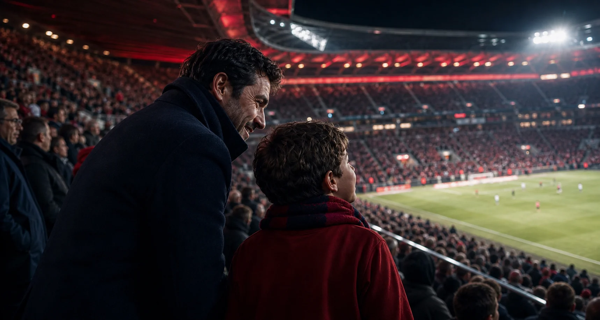
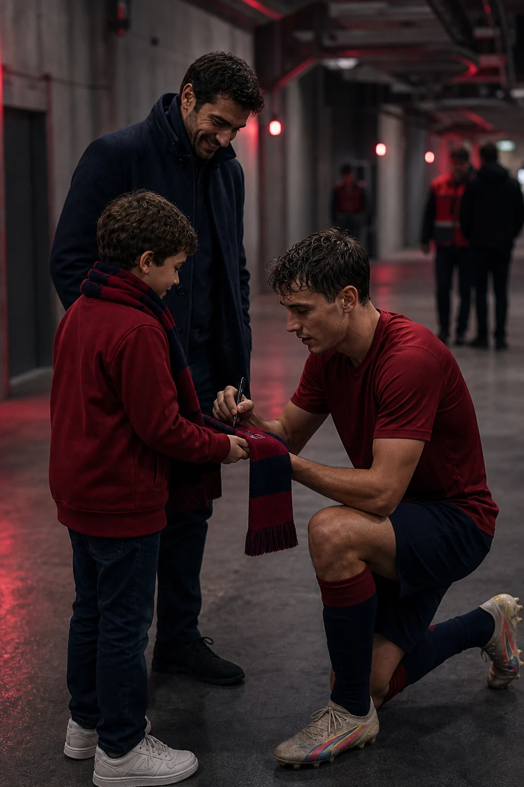
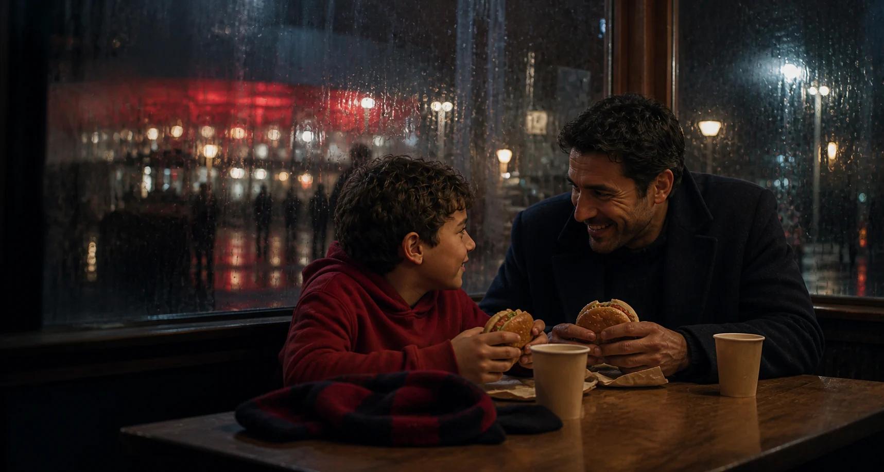

El primer cántico
Álex no conocía todas las palabras. Las cantó igualmente.
CLUB ATLÉTICO OSASUNA · PAMPLONA
OSASUNA · HISTORIA FICTICIA DE DEMOSTRACIÓN

Una promesa, dos bufandas rojillas y noventa minutos que Álex recordará siempre.
TODO EMPEZÓ MUCHO ANTES DEL PITIDO INICIAL.
Álex llevaba meses contando los días. Su padre llevaba años imaginando este momento. Aquella tarde, por fin, caminaron hacia El Sadar con la misma ilusión.

Álex no conocía todas las palabras. Las cantó igualmente.
La grada se levantó de repente. El abrazo llegó todavía más rápido.
Cuando todo parecía haber terminado, alguien pronunció su nombre.

Una escena imaginada para enseñar cómo un encuentro inesperado puede convertirse en el corazón de la experiencia.

Una hamburguesa, la bufanda rojilla sobre la mesa y el partido repetido jugada a jugada.
Álex,
quizá algún día olvides el resultado. Puede que tampoco recuerdes quién marcó primero. Pero espero que recuerdes el camino hasta el estadio, el ruido al entrar y lo fuerte que nos abrazamos.
Yo no olvidaré tu cara. Porque mientras tú veías el campo por primera vez, yo estaba viendo cómo un recuerdo empezaba a existir.
Con todo mi orgullo,
Papá
DEMO CONCEPTUAL AMBIENTADA EN OSASUNA · PERSONAS, ESCENAS Y RELATO FICTICIOS.